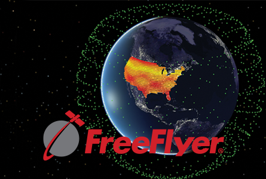
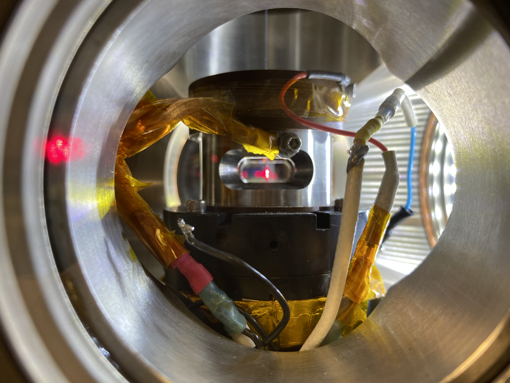
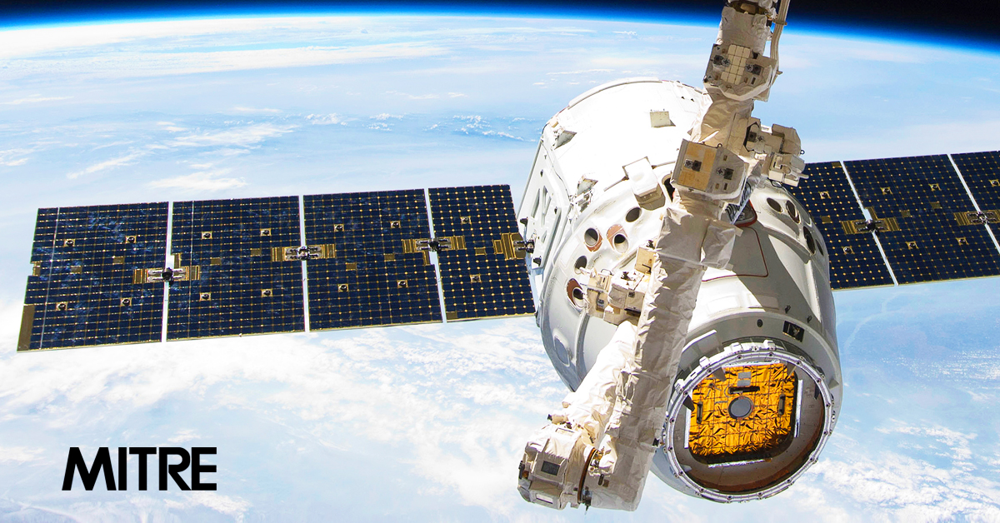
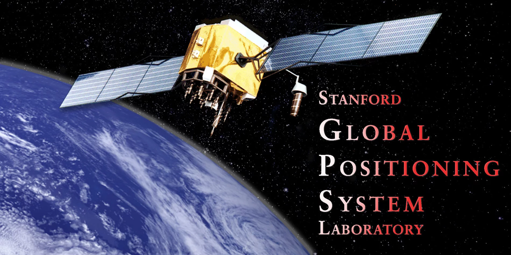

I am currently a backend developer on the FreeFlyer team. My core responsibilities include implementing features in C++ and leading product planning meetings to design the user-end experience.
As an engineer working on NASA's Flight Dynamics Support Services (FDSS) III contract, I developed a Kalman Filter with attitude sensor models in Python to simulate navigation error for several lunar EVA scenarios on the ARTEMIS program.
I designed and fabricated an injector for dropping samples of lunar dust into an electrodynamic balance at NASA Marshall Spaceflight Center. The results of these experiements will help NASA decide how to mitigate charge buildup during the ARTEMIS missions.
As an intern at the MITRE Corporation I researched GPS receiver performance in the Space Service Volume (SSV) and developed an internal MATLAB tool to simulate threats to GPS signal integrity.
I calculated the message loss rate of WAAS messages across several FAA test flights to determine whether the actual WAAS system meets its own Minimum Operational Performance Standard (MOPS). I published a paper with my findings at the ION 2021 conference.
